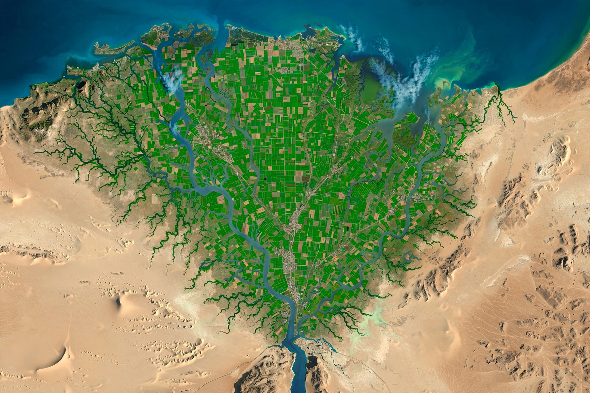

[Image placeholder: The Nile Delta, seen from space]A **river delta** is a landform created by deposition of sediment carried by a river as it enters slower-moving or standing water — an ocean, sea, estuary, lake or reservoir. The name comes from the Greek letter delta (Δ), whose triangular shape Herodotus noted in the Nile Delta. Deltas form when sediment supply outpaces removal by waves and tides; their shapes range from the arcuate Nile fan to the bird's-foot Mississippi Delta and wave-dominated and tide-dominated forms.
Deltas are among Earth's most fertile and densely populated landscapes — the Ganges–Brahmaputra Delta (the largest, spanning Bangladesh and West Bengal), the Mekong, Yangtze, Irrawaddy and Niger deltas support hundreds of millions of people. They are also exceptionally vulnerable: subsidence, upstream dams trapping sediment, and sea-level rise threaten them with flooding and erosion. The Mississippi Delta has been losing land rapidly because levees prevent sediment replenishing the wetlands.
As a river's flow decelerates, it drops its load — coarsest first. Distributary channels split across the delta plain, avulsing (switching course) over centuries; the Mississippi has built and abandoned several lobes. Deltaic deposits are major hosts of coal, oil and gas.
Delta wetlands and mangroves are nurseries for fisheries, buffers against storm surges and rich rice-growing soils. Human engineering — polders in the Netherlands' Rhine–Meuse delta, embankments in Bangladesh — both protects and endangers them.